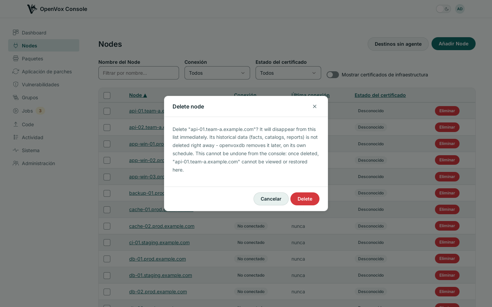

Nodes
Quitar un Node
Elimine un Node desde la consola: qué hace eso en openvoxdb y en la CA, y qué conserva.
Eliminar un Node
En la página Nodes, elija Eliminar en el Node y confirme. Esto requiere el permiso nodes:manage, en un rol cuyos grupos de Nodes incluyan el Node.


Eliminar hace dos cosas a la vez:
- desactiva el Node en openvoxdb, de modo que deja de aparecer en la flota;
- limpia el certificado del Node en la CA, igual que la acción Limpiar, de modo que el certname ya no puede volver a autenticarse y queda libre para incorporarse de nuevo.
Hacen falta las dos mitades para que el Node desaparezca de la página, que lista los Nodes que conoce openvoxdb y los que conoce la CA. Si la consola no tiene credencial de administración de certificados, solo se hace la mitad de openvoxdb, y el Node puede seguir apareciendo por su certificado.
Antes de eliminar una máquina que va a retirar, detenga su agente de Node y su agente de Puppet, o desinstálelos, para que no vuelva a enviar Reports ni a conectarse.
Qué no hace la eliminación
- No borra el historial del Node de inmediato. Sus Facts, catálogos y Reports permanecen en openvoxdb hasta que la recolección de basura de openvoxdb los elimina, según su propio calendario.
- No hay lista de Nodes eliminados. openvoxdb deja fuera de todos los listados a los Nodes desactivados, y la consola no guarda un registro aparte, así que un Node eliminado desaparece de las páginas de la consola.
Recuperar un Node
El certificado de un Node eliminado se ha limpiado, así que recuperarlo equivale a añadir un Node nuevo: vuelva a ejecutar en él el script de instalación y firme su nueva solicitud. Consulte Añadir Nodes.